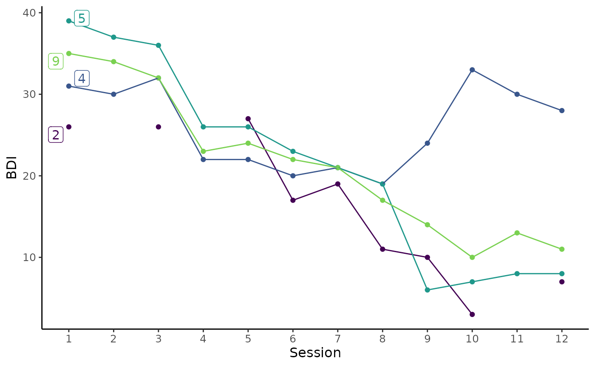
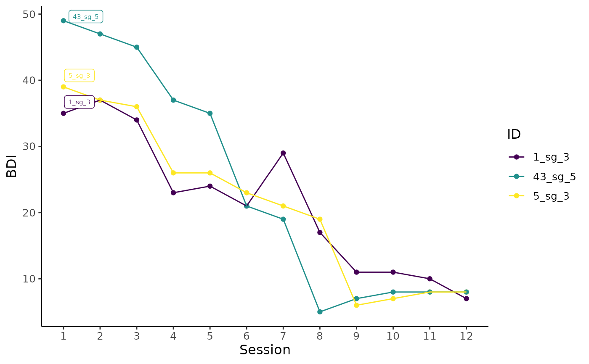

Plot individual trajectories of selected cases using ggplot.
This function can be combined with a filter command to explore the trajectories of individual or groups of cases.
Further ggplot2 components can be added using + following this function.
Usage
plot_sg_trajectories(
data,
id_var,
var_list,
select_id_list = NULL,
select_n = NULL,
show_id = TRUE,
show_legend = TRUE,
legend_title = "ID",
id_label_size = 2,
connect_missing = TRUE,
colour = c("viridis", "ggplot", "grey"),
viridis_option = c("D", "A", "B", "C"),
viridis_begin = 0,
viridis_end = 1,
line_alpha = 1,
point_alpha = 1,
xlab = "X",
ylab = "Y",
scale_x_num = FALSE,
scale_x_num_start = 1,
apaish = TRUE,
...
)Arguments
- data
Dataset in wide format.
- id_var
String, specifying ID variable.
- var_list
Vector, specifying variable names to be plotted in sequential order.
- select_id_list
Vector, specifying case IDs to be plotted.
- select_n
Numeric, specifying number of randomly selected cases to be plotted.
- show_id
Logical, specifying whether or not to show ID variables inside the plot near the first measurement point.
- show_legend
Logical, specifying whether or not a legend of all IDs.
- legend_title
String, specifying the title of legend, by default the variable name of
id_varwill be shown.- id_label_size
Numeric, specifying the size of the ID label, if
show_id = TRUE.- connect_missing
Logical, specifying whether to connect points across missing values.
- colour
String, specifying the discrete colour palette to be used.
- viridis_option
String, specifying the colour option for discrete viridis palette, if
colour = "viridis". Seescale_fill_viridis_dfor more details.- viridis_begin
Numeric, specifying hue between 0 and 1 at which the viridis colormap begins, if
colour = "viridis". Seescale_fill_viridis_dfor more details.- viridis_end
Numeric, specifying hue between 0 and 1 at which the viridis colormap ends, if
colour = "viridis". Seescale_fill_viridis_dfor more details.- line_alpha
Numeric, specifying alpha (transparency) of lines.
- point_alpha
Numeric, specifying alpha (transparency) of points.
- xlab
String for x axis label.
- ylab
String for y axis label.
- scale_x_num
Logical, if
TRUEprint sequential numbers starting from 1 as x axis labels, ifFALSEuse variable names.- scale_x_num_start
Numeric, specifying the starting value of the x axis, if
scale_x_num = TRUE.- apaish
Logical, if
TRUEaligns plot with APA guidelines.- ...
Further arguments to be passed on to
geom_label_repel.
Examples
# Plot individual trajectories of IDs 2, 4, 5, and 9
plot_sg_trajectories(data = sgdata,
id_var = "id",
select_id_list = c("2", "4", "5", "9"),
var_list = c("bdi_s1", "bdi_s2", "bdi_s3", "bdi_s4",
"bdi_s5", "bdi_s6", "bdi_s7", "bdi_s8",
"bdi_s9", "bdi_s10", "bdi_s11", "bdi_s12"),
show_id = TRUE,
id_label_size = 4,
label.padding = .2,
show_legend = FALSE,
colour = "viridis",
viridis_option = "D",
viridis_begin = 0,
viridis_end = .8,
connect_missing = FALSE,
scale_x_num = TRUE,
scale_x_num_start = 1,
apaish = TRUE,
xlab = "Session",
ylab = "BDI")
#> Warning: Removed 3 rows containing missing values (`geom_point()`).
#> Warning: Removed 3 rows containing missing values (`geom_label_repel()`).

# Create byperson dataset to use for plotting
byperson <- create_byperson(data = sgdata,
sg_crit1_cutoff = 7,
id_var_name = "id",
tx_start_var_name = "bdi_s1",
tx_end_var_name = "bdi_s12",
sg_var_list = c("bdi_s1", "bdi_s2", "bdi_s3",
"bdi_s4", "bdi_s5", "bdi_s6",
"bdi_s7", "bdi_s8", "bdi_s9",
"bdi_s10", "bdi_s11", "bdi_s12"),
sg_measure_name = "bdi")
#> First, second, and third sudden gains criteria were applied.
#> The critical value for the third criterion was adjusted for missingness.
#> The first gain/loss was selected in case of multiple gains/losses.
# First, filter byperson dataset to only include cases with more than one sudden gain
# Next, plot BDI trajectory of 3 randomly selected cases with with more than one sudden gain
byperson %>%
dplyr::filter(sg_freq_byperson > 1) %>%
plot_sg_trajectories(id_var = "id_sg",
var_list = c("bdi_s1", "bdi_s2", "bdi_s3", "bdi_s4",
"bdi_s5", "bdi_s6", "bdi_s7", "bdi_s8",
"bdi_s9", "bdi_s10", "bdi_s11", "bdi_s12"),
select_n = 3,
show_id = TRUE,
show_legend = TRUE,
scale_x_num = TRUE,
scale_x_num_start = 1,
xlab = "Session",
ylab = "BDI")
